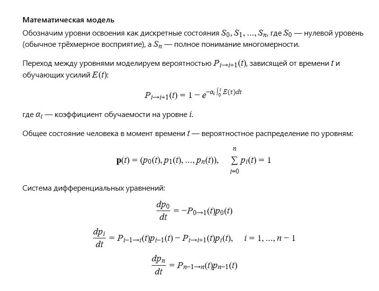

Author: Valerii
This is how I imagine studying multidimensional space (calculation) :)
On a sheet of paper, we construct a simple arithmetic 2D crossword with 5 formulas intersecting at arbitrary points. Numbers at intersections can be both input data and results of calculations.
This is the 2nd-dimensional space.
Along the Z-axis, we add several more formulas with intersection points from the 2D crossword.
This becomes 3D space and a 3D crossword.
After a while, some numbers start changing randomly.
This is 4D space, as we added time.
Then some numbers randomly flip "upside down".
This is 5D space.
Next, some formulas partially shift from one chain to another, while displaced parts of other formulas take their place.
This is 6D space.
Then, some numbers from the 3D crossword detach from formulas and float freely in space.
This is 7D space.
Next, the floating numbers start randomly replacing numbers in formulas with unknown variables a, b, c ... x, y, z.
This is 8D space.
Then the 3D crossword begins to spin, first along X, then Y, and finally Z axes. Remaining "live" formulas compress, pushing out numbers and variables with minus signs.
This is 9D space.
Finally, the spinning process becomes so intense that even positive numbers, which were trying to combine, break away and the 3D crossword collapses to a point.
This is 10D space.
Can you imagine the existence of a biological entity in multidimensional space (calculation)?
Imagining a biological entity in multidimensional space is a fascinating challenge for the imagination. In three-dimensional space, we are used to our body with length, width, and height. In four-dimensional space, where time is added, a biological organism is perceived as a being existing in time and changing. In spaces higher than the fourth dimension, a biological entity can be represented as a set of interconnected parameters and processes, where "forms" of life are not just solid objects but dynamic multidimensional structures capable of adapting and evolving in space with more complex topology. Such an organism could perceive and influence dimensions hidden from us, opening entirely new possibilities for understanding life and consciousness.
Is it possible to build a mathematical model of the sequence by which a person studies and adapts to multidimensional space?
The idea of the model is to describe the adaptation process as a sequence of states, where each state reflects the level of multidimensional perception mastery, and transitions between states depend on effort, experience, and time.

Model Explanation:
alpha
— learning ability at each level (higher level = more complexity).
effort
— effort (0 to 1), set by the user with a slider.
The simulation shows how the probability of being at each level changes over time.
The model accounts for the fact that a person can be at a level with some probability.
Output — probability table over time.